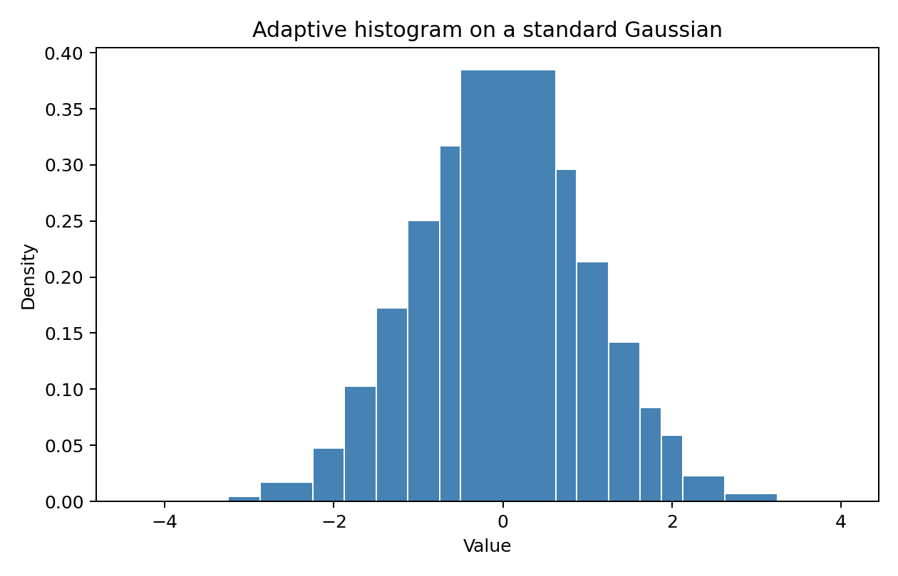
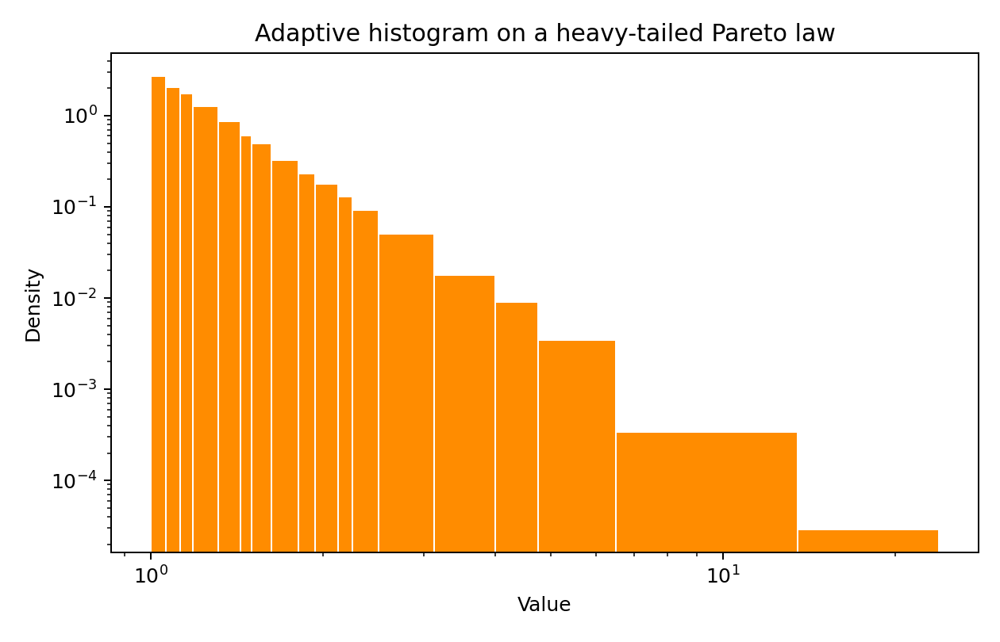

Khisto — Histograms that fit your data¶
Drop-in replacements for numpy.histogram and plt.hist with
adaptive, variable-width bins powered by the Khisto algorithm.
Dense regions get fine bins, sparse regions get wide ones — no tuning needed.

Bins concentrate around the interesting areas — exactly matching the density of a normal distribution.

Log-log axes reveal how adaptive bins track a power-law decay over four orders of magnitude.
Get started¶
pip install khisto # core (NumPy only)
pip install "khisto[matplotlib]" # + plotting
import numpy as np
from khisto import histogram
data = np.random.normal(0, 1, 10_000)
hist, bin_edges = histogram(data) # optimal bins, no guessing
histogram(data) returns (hist, bin_edges) — same shape as
numpy.histogram, better bins.
khisto.matplotlib.hist plots like plt.hist with density,
cumulative, step, and log-scale support.
compute_histograms exposes every granularity level so you can
pick the resolution that suits your analysis.
Side-by-side parameter tables for NumPy, Matplotlib, and Khisto.
A runnable notebook tour covering all features.